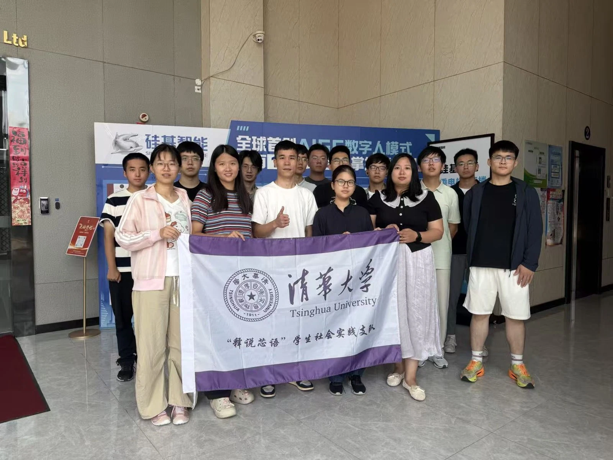
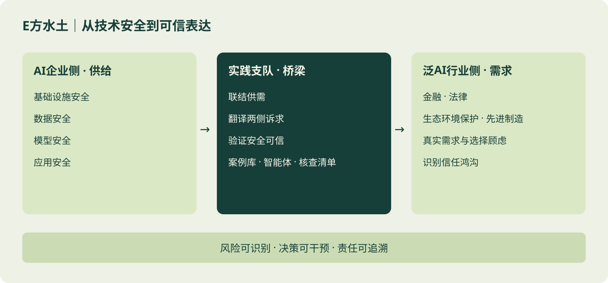
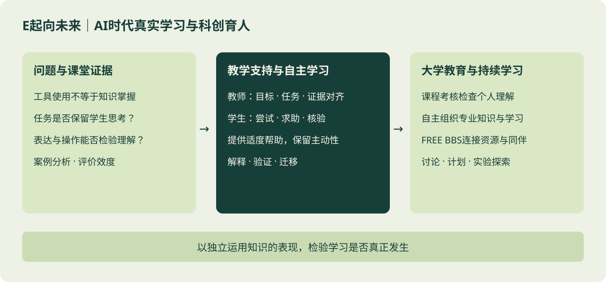

品牌项目调研
围绕“E方水土”“E起向未来”，整理支队材料、提炼主题、设计框架，形成总调研报告。

电子系团委调研组以真实问题为起点，通过资料梳理、访谈交流和报告写作，连接同学的需求与院系的工作。在社会实践中，我们汇聚支队的一手观察，提炼品牌项目的共同问题；在校园生活中，我们期待认真倾听，把具体的想法转化为有依据的建议。
围绕“E方水土”“E起向未来”，整理支队材料、提炼主题、设计框架，形成总调研报告。
学习访谈、问卷和分析方法，让观察可追溯，让报告有证据，让经验能够接续。
贴近学习、生活与成长中的真实需求，通过交流与调研，为系团委工作提供参考。
连接AI企业与泛AI行业，以实践支队为桥梁，研究安全能力、真实需求与可信表达。

从课堂证据出发，研究AI介入后如何保留独立思考、检验知识理解，并支持持续学习。

“释说芯语”支队以“AI＋青少年科普教育”为主题，赴南京、淮安开展实践，将科普教学与需求调研相结合，探索高校专业资源与地方教育需求之间的连接。调研组骨干参与其中，承担调研相关工作，在走访、访谈与交流中梳理问题、积累思考。
实践围绕四条线索展开：在单片机夏令营与电路实验课中，将专业知识转化为青少年可参与的动手体验；通过街头访谈、课后问卷及师生交流，了解科普教育的需求与反馈；与南京邮电大学“芯中邮我”科普团交流课程建设和常态化志愿服务经验；走访政府部门、沁恒微电子、硅基智能等单位，了解校地协同、产业应用与人才培养，思考科普资源如何持续供给、实践成果如何接续。
从电路实验课的讲解，到科普夏令营的陪伴与动手指导，调研组成员在志愿服务中分享专业知识，也学习如何把抽象原理讲得清楚、把活动组织得贴近参与者。与孩子们一起观察、尝试和解决问题，让我们更具体地理解科普教育的需求，也为后续调研积累来自现场的观察。
组会是调研组交流思路、推进工作的日常空间。大家围绕实践材料梳理、研究问题与报告框架展开讨论，交流阅读和分析中的发现，协调任务分工与进度。从提出疑问到相互补充，我们在一次次讨论中把零散的观察连成线索，也让调研成果在共同推敲中更加扎实。
调研之外，我们也通过破冰与团建认识彼此。暂时放下手头的材料，在轻松的相处中交流兴趣、熟悉伙伴，让新成员更快融入团队。共同工作的默契，往往从一次自然的交谈开始；这些相聚，也让调研组成为能够分享想法、彼此支持的集体。
有些故事，先有脚步，后有名字。一次支教结束后的复盘，一份访谈里尚未回答的追问，一届届同学留在材料中的思考，共同构成了今天调研工作的来路。曾经出发的人把经验写下，后来接棒的人再把问题打开：我们带去了什么，又真正理解了什么？
2023年暑期的“E起向未来”成果报告，留下了一条清晰的传承线索：项目由电子系团委实践组与志愿组联合开展，把科创教育调研与单片机支教相连，也将交流延续到学期中。那时写下的现场观察，为后来的人留下了问题与方法。
2026—2027学年，响应系品牌项目调研的需求，调研组正式重组。新的组织从旧的实践中生长，把散落在不同支队、不同地方的观察连成可以讨论的线索。报告不是旅途的句号，而是下一次出发前，留给同伴的一盏灯。
从“我”到“我们”，传下来的不只是文档与照片，也是一种愿意慢下来倾听、愿意多走一步求证的习惯。愿每个灵机一动被认真对待，愿每个微小需求都有回应。